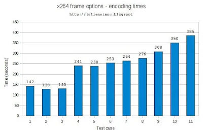
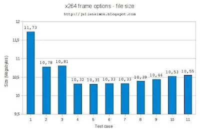
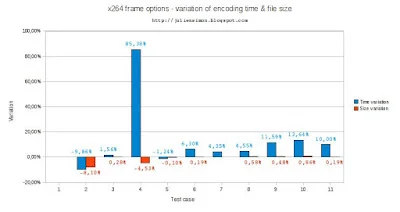
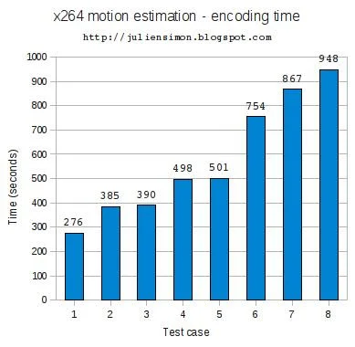
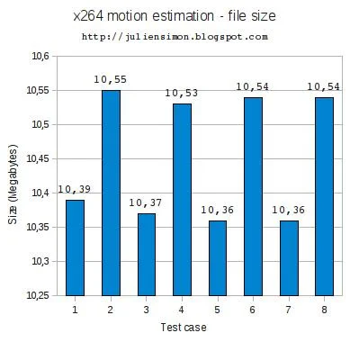
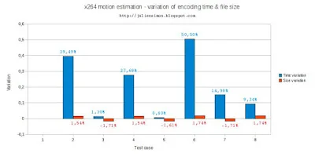

For this purpose, I will encode the same video with different flag combinations, measure encoding time and file size, and stream it on my PS3 using mediatomb. This is also a way to check that the PS3 supports the encoding flags I'm going to try.
1) A quick look at the test file
I decided to pick a low resolution, high bitrate MPEG video. This way, artifacts will be much more visible when the video is displayed on a large screen, and it will also be interesting to see how much x264 can compress this any further.
Here's what mediainfo reports:
ubuntu% mediainfo video.mpg2) Test "methodology"
General
Complete name : video.mpg
Format : MPEG-PS
File size : 41.8 MiB
Duration : 2mn 59s
Overall bit rate : 1 954 Kbps
Video
ID : 224 (0xE0)
Format : MPEG Video
Format version : Version 1
Format settings, Matrix : Default
Duration : 2mn 59s
Bit rate mode : Constant
Bit rate : 1 594 Kbps
Nominal bit rate : 1 700 Kbps
Width : 352 pixels
Height : 288 pixels
Display aspect ratio : 4/3
Frame rate : 25.000 fps
Scan type : Progressive
Bits/(Pixel*Frame) : 0.629
Audio
ID : 192 (0xC0)
Format : MPEG Audio
Format version : Version 1
Format profile : Layer 2
Duration : 2mn 59s
Bit rate mode : Constant
Bit rate : 224 Kbps
Channel(s) : 2 channels
Sampling rate : 44.1 KHz
Resolution : 16 bits
Video delay : 280ms
Although I will also encode audio to AAC, I will only be benchmarking video: encoding times and file sizes discussed below are for the video stream only.
Regarding video encoding, I've opted for Constant Rate Factor encoding (--crf flag), with the same quality factor on all tests. Indeed, I'm not looking to achieve "the best encoding" (whatever that is): instead, I'm really trying to highlight the relative impact of a given flag on encoding.
All tests are performed on Ubuntu 8.04, running on an 1.83GHz Intel Core 2 CPU (T5600 @ 1.83GHz). For the record, here are the actual commands, based on ffmpeg SVN-r16452 and MP4Box 0.4.4:
3) Finding out the default values
% ffmpeg -i video.mpg -vn -acodec libfaac -aq 255 -ar 44100 -ac 2 -async 1 video.aac
% time ffmpeg -i video.mpg -f rawvideo - | x264 $X264_FLAGS -o video.264 - 352x288
% MP4Box -new -add video.aac -add video.264 video.mp4
The first problem is to find out what default values x264 is using. It would not make a lot of sense to start tweaking if we don't know what the starting point it. Fortunately, mediainfo is able to dump encoding flags, so let's do a quick vanilla run (X264_FLAGS="--crf 21"):
ubuntu% mediainfo video.mp4
output removed
Format profile : Main@L1.3
output removed
Encoding settings : cabac=1 / ref=1 / deblock=1:0:0 / analyse=0x1:0x111 / me=hex / subme=6 / psy_rd=1.0:0.0 / mixed_ref=0 / me_range=16 / chroma_me=1 / trellis=0 / 8x8dct=0 / cqm=0 / deadzone=21,11 / chroma_qp_offset=-2 / threads=1 / nr=0 / decimate=1 / mbaff=0 / bframes=0 / keyint=250 / keyint_min=25 / scenecut=40 / rc=crf / crf=21.0 / qcomp=0.60 / qpmin=10 / qpmax=51 / qpstep=4 / ip_ratio=1.40 / aq=1:1.00
OK, so:
- no B frames (bframes=0)
- only 1 reference frame (ref=1), no mixed references (mixed_ref=0)
- partitions (analyse=0x111): p8x8,b8x8,i8x8,i4x4
Extracted from 'x264.h':/* Analyse flags
*/
#define X264_ANALYSE_I4x4 0x0001 /* Analyse i4x4 */
#define X264_ANALYSE_I8x8 0x0002 /* Analyse i8x8 (requires 8x8 transform) */
#define X264_ANALYSE_PSUB16x16 0x0010 /* Analyse p16x8, p8x16 and p8x8 */
#define X264_ANALYSE_PSUB8x8 0x0020 /* Analyse p8x4, p4x8, p4x4 */
#define X264_ANALYSE_BSUB16x16 0x0100 /* Analyse b16x8, b8x16 and b8x8 */ - motion estimation method: hex (me=hex)
Extracted from 'x264 --longhelp':--meInteger pixel motion estimation method
- dia: diamond search, radius 1 (fast)
- hex: hexagonal search, radius 2
- umh: uneven multi-hexagon search
- esa: exhaustive search
- tesa: hadamard exhaustive search (slow) - subpixel motion estimation method: 6 (subme=6)
Extracted from 'x264 --longhelp':--submeSubpixel motion estimation and mode decision
- 0: fullpel only (not recommended)
- 1: SAD mode decision, one qpel iteration
- 2: SATD mode decision
- 3-5: Progressively more qpel
- 6: RD mode decision for I/P-frames
- 7: RD mode decision for all frames
- 8: RD refinement for I/P-frames
- 9: RD refinement for all frames
These are the tests I'm going to run to try to find out what each additional flags costs and brings:
- --crf 21 : default values
- --crf 21 --bframes 16 : enable B frames (up to 16 consecutive frames)
- --crf 21 --bframes 16 --b-pyramid : allow B frames to be referenced by other frames
- --crf 21 --bframes 16 --b-pyramid --ref 8 --mixed-refs : allow up to 8 frames to be referenced by P frames & allow references for partitions (instead of macroblocks)
- --crf 21 --bframes 16 --b-pyramid --ref 8 --mixed-refs --weightb : allow weights to be set on referenced frames
- --crf 21 --bframes 16 --b-pyramid --ref 8 --mixed-refs --weightb --partitions all : enable all partitions
- --crf 21 --bframes 16 --b-pyramid --ref 8 --mixed-refs --weightb --partitions all --8x8dct --direct-8x8 1 : enable 8x8 partitions in I frames
- --crf 21 --bframes 16 --b-pyramid --ref 8 --mixed-refs --weightb --partitions all --8x8dct --direct-8x8 1 --no-fast-pskip : examine P frames more closely
- --crf 21 --bframes 16 --b-pyramid --ref 8 --mixed-refs --weightb --partitions all --8x8dct --direct-8x8 1 --no-fast-pskip --subme 7 : work harder on subpixel motion estimation
- --crf 21 --bframes 16 --b-pyramid --ref 8 --mixed-refs --weightb --partitions all --8x8dct --direct-8x8 1 --no-fast-pskip --subme 8 : work even harder on subpixel motion estimation
- --crf 21 --bframes 16 --b-pyramid --ref 8 --mixed-refs --weightb --partitions all --8x8dct --direct-8x8 1 --direct auto --no-fast-pskip --subme 9 : work extremely hard on subpixel motion estimation :)
Here are the results on the encoding time (click for a larger version):
Here are the results on the size of the output file (click for a larger version):
{kind=link}
Here are the sequential variations, i.e. from one test case to the next (click for a larger version):
{kind=link}

{kind=link}
6) Testing motion estimation
Here are the tests I'm going to run to compare different motion estimation methods, with both default and advanced subpixel motion estimation.
All these tests also include '--crf 21 --bframes 16 --b-pyramid --ref 8 --mixed-refs --weightb --partitions all --8x8dct --direct-8x8 1 --no-fast-pskip'.
- --me hex --subme 6 : hexagonal search, default subpixel processing
- --me hex --subme 9 : hexagonal search, maximum subpixel processing
- --me umh --subme 6 : uneven multi-hexagon search, default subpixel processing
- --me umh --subme 9 : uneven multi-hexagon search, maximum subpixel processing
- --me esa --subme 6 : exhaustive search, default subpixel processing
- --me esa --subme 9 : exhaustive search, maximum subpixel processing
- --me tesa --subme 6 : hadamard exhaustive search, default subpixel processing
- --me tesa --subme 9 : hadamard exhaustive search, maximum subpixel processing
Here are the results on the encoding time (click for a larger version):
Here are the results on the size of the output file (click for a larger version):
{kind=link}
Here are the sequential variations, i.e. from one test case to the next (click for a larger version):
{kind=link}
8) Conclusion (?)
{kind=link}
Hmm, some really interesting figures in there: I need to think about it, so let's call it day for now :)
I'll come back to these numbers very soon and I'll try to to explain / guess what they mean. All comments welcome, of course!